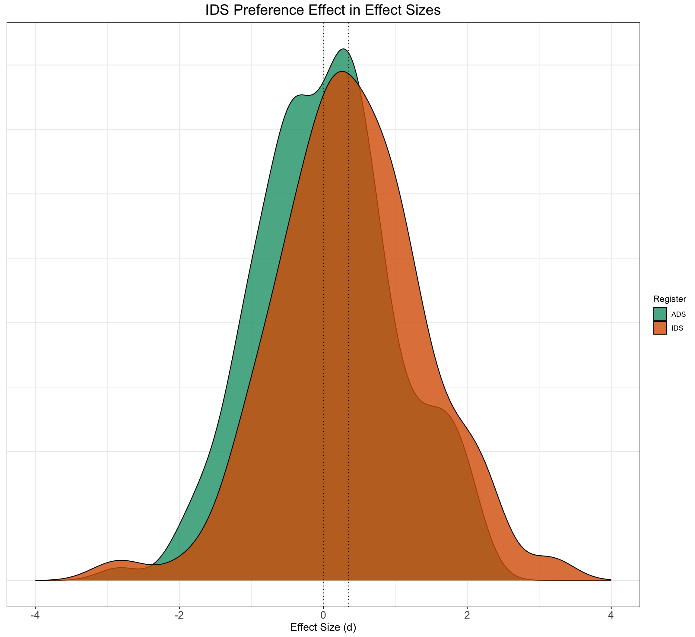
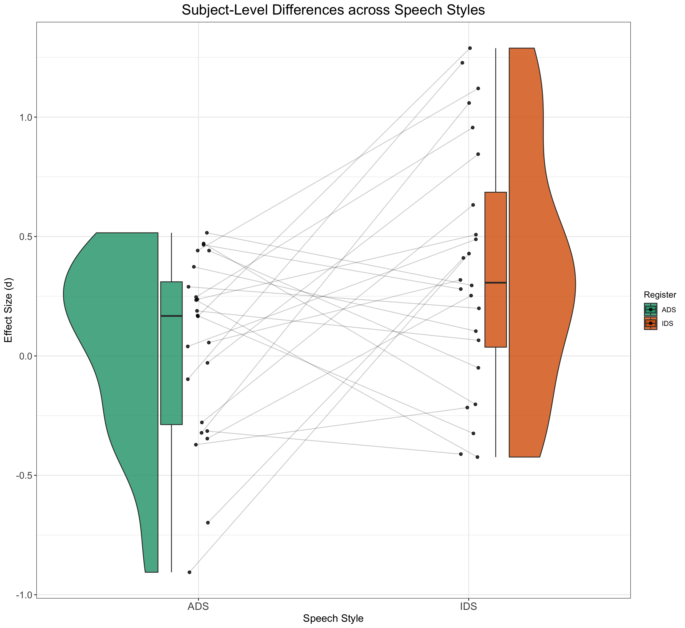

# set up the custom data simulation function
SimulateEffectSizeData <- function(
n_subj = 24, # number of subjects
n_ADS = 6, # number of ADS stimuli
n_IDS = 6, # number of IDS stimuli
mean_intercept = 0, # ADS intercept
mean_slope = 0.35, # effect of IDS
item_varyingintercept = 0.1, # by-item random intercept sd
subject_varyingintercept = 0.2, # by-subject random intercept sd
subject_varyingslope = 0.2, # by-subject random slope sd
rho = 0.2, # correlation between intercept and slope
sigma = 1) { # residual (standard deviation)
items <- data.frame(
Register = rep(c("IDS", "ADS"), c(n_ADS, n_IDS)),
item_intercept_sd = rnorm(n = n_ADS + n_IDS, mean = 0, sd = item_varyingintercept)
) %>%
mutate(SpeechStyle = recode(Register, "ADS" = 0, "IDS" = 1)) %>%
mutate(item_id = faux::make_id(nrow(.), "I"))
subjects <- faux::rnorm_multi(
n = n_subj,
mu = 0,
sd = c(subject_varyingintercept, subject_varyingslope),
r = rho,
varnames = c("subject_intercept_sd", "subject_slope_sd")
) %>%
mutate(subj_id = faux::make_id(nrow(.), "S"))
ParameterValues <- crossing(subjects, items) %>%
mutate(e_si = rnorm(nrow(.), mean = 0, sd = sigma))
ParameterValues %>%
mutate(EF = mean_intercept + subject_intercept_sd + item_intercept_sd + (mean_slope + subject_slope_sd) * SpeechStyle + e_si) %>% #sum together overall intercept, varying subject and item intercepts, varying subject slopes, and random error.
dplyr::select(subj_id, item_id, Register, SpeechStyle, EF)
}Part II, Simulation-Based Power Analysis
1 Cumulative Science and Prior Knowledge
Up until now, we have relied solely on our intuitions about infant looking times based on our experience with conducting infant experiments. This strategy introduces lots of assumptions into the simulation process and creates a multiverse of different parameter settings that have real effects on power analyses. In this section, we consider how to improve our data simulation process by capitalising on cumulative science efforts, such as using effect size estimates from meta-analyses and multi-lab replication studies.
For the IDS preference effect, for example, we can thank the ManyBabies community for conducting both a multi-lab replication study and a community-augmented meta-analysis on infants’ preference to attend to IDS over ADS (ManyBabies Consortium, 2020; Zettersten, Cox, Bergmann, et al., 2023). By synthesising data across such a wide variety of experimental designs, participants and stimuli, we now have a fairly good estimate of the overall magnitude of the IDS preference effect. Both sources of evidence converge on an effect size of ~0.35 with 95% CI of [0.16; 0.47]. This section delves into the realm of effect sizes and teaches you how to implement a power analysis based on an effect size estimate.
2 Adapting our Simulation Function to Effect Size Data
Let’s continue with our IDS preference example and take inspiration from the ManyBabies1 estimate (https://doi.org/10.1177/2515245919900809) to think about how we would simulate data for a new experimental study on the IDS preference effect. Because our hypothetical study still revolves around a within-subjects, between-items study, we can rely on the simulation function from the previous page. All we have to do is to adapt the simulation function so that it suits the new scale of effect sizes.
Let’s adapt our simulation function from previous pages to the new scale of effect sizes and call it SimulateEffectSizeData(). Following ManyBabies Consortium (2020), a positive effect size denotes longer looking times to IDS stimuli over ADS stimuli, and an effect size of 0 denotes no preference for either speech style (i.e., similar looking times to ADS and IDS stimuli).
EffectSizeDataSimulated <- SimulateEffectSizeData()
EffectSizeDataSimulated %>%
ggplot() + geom_density(aes(EF, fill = Register), alpha = 0.8) +
geom_vline(xintercept = 0.35, linetype = 3) + geom_vline(xintercept = 0,
linetype = 3) + xlim(c(-4, 4)) + ggtitle("IDS Preference Effect in Effect Sizes") +
xlab("Effect Size (d)") + plot_theme + scale_fill_brewer(palette = "Dark2") +
theme(axis.title.y = element_blank(), axis.text.y = element_blank(),
axis.ticks.y = element_blank())
EffectSizeDataSimulated %>%
group_by(subj_id, Register) %>%
dplyr::summarise(medLT = mean(EF), .groups = "drop") %>%
ggplot(aes(x = Register, y = medLT, fill = Register)) + geom_rain(alpha = 0.8,
rain.side = "f1x1", id.long.var = "subj_id", point.args.pos = list(position = position_jitter(width = 0.04,
height = 0, seed = 42)), line.args.pos = list(position = position_jitter(width = 0.04,
height = 0, seed = 42))) + scale_fill_brewer(palette = "Dark2") +
ggtitle("Subject-Level Differences across Speech Styles") +
xlab("Speech Style") + ylab("Effect Size (d)") + plot_theme
3 A Linear Mixed Effects Model of Simulated Effect Size Data
Let’s think about how we want to run a linear mixed-effects model of the data. For a model with varying intercepts and varying slopes for subject and varying intercepts for item, an appropriate model could involve the following lmer syntax:
EffectSizeDataSimulated <- SimulateEffectSizeData()
model <- lmer(EF ~ 1 + SpeechStyle + (1 + SpeechStyle | subj_id) +
(1 | item_id), data = EffectSizeDataSimulated)
summary(model)Linear mixed model fit by REML. t-tests use Satterthwaite's method [
lmerModLmerTest]
Formula: EF ~ 1 + SpeechStyle + (1 + SpeechStyle | subj_id) + (1 | item_id)
Data: EffectSizeDataSimulated
REML criterion at convergence: 832.8
Scaled residuals:
Min 1Q Median 3Q Max
-2.8933 -0.6515 0.0122 0.6594 3.2162
Random effects:
Groups Name Variance Std.Dev. Corr
subj_id (Intercept) 0.01897 0.1377
SpeechStyle 0.05202 0.2281 -0.07
item_id (Intercept) 0.04921 0.2218
Residual 0.97582 0.9878
Number of obs: 288, groups: subj_id, 24; item_id, 12
Fixed effects:
Estimate Std. Error df t value Pr(>|t|)
(Intercept) -0.03582 0.12557 9.89670 -0.285 0.781
SpeechStyle 0.15985 0.17923 10.18933 0.892 0.393
Correlation of Fixed Effects:
(Intr)
SpeechStyle -0.670In the following code blocks, we will automatise this process and run the power analysis proper!
4 Time to Power-Up the Analysis
Now we have two essential components to perform our simulation-based power analysis: i) a code pipeline to generate data for our research question and ii) a clear idea of how we want to model the data. Now it’s time to run the actual power analysis. The way we do this is to specify an effect, run hundreds of models and calculate the proportion of models that reject the null hypothesis. This proportion is an estimate of statistical power for those particular parameter values.
To simplify the process, we can write a new function that combines a modelling component into our previous SimulateEffectSizeData() function. We will call this function SimulateAndModelEFData(), and we will use broom.mixed::tidy(model) to obtain a dataframe with relevant results from the model and write each model result to a .csv-file.
# simulate, analyze, and return a table of parameter
# estimates
SimulateAndModelEFData <- function(...) {
# simulate EF data function
dataSimulated <- SimulateEffectSizeData()
# model EF data
model <- lmer(EF ~ 1 + SpeechStyle + (1 | item_id) + (1 +
SpeechStyle | subj_id), data = dataSimulated)
# write to a dataframee
broom.mixed::tidy(model)
}5 Running the Power Analysis
Now we have a function that generates data, runs a model and spits out the results! Now it’s time to repeat a few hundred times, so that we can calculate how much power we have with our given parameters. We are going to use map_df() to run the simulation and modelling function 500 times and write it to a .csv file.
# run simulations and save to a file
n_runs <- 500 # use at least 500 to get stable estimates
simulations <- purrr::map_df(1:n_runs, ~SimulateAndModelEFData())
write_csv(simulations, here("EFsimulations.csv"))If it ran correctly, it should have produced a .csv file with model results from each new simulation of data. Let’s read in the results and have a look at what they say!
# read saved simulation data
sims <- read_csv(here("EFsimulations.csv"), show_col_types = FALSE) %>%
dplyr::select(term, estimate, std.error, p.value)
sims %>%
group_by(term) %>%
dplyr::summarize(mean_estimate = mean(estimate), mean_se = mean(std.error),
power = mean(p.value < 0.05), .groups = "drop")# A tibble: 6 × 4
term mean_estimate mean_se power
<chr> <dbl> <dbl> <dbl>
1 (Intercept) 0.00199 0.106 0.052
2 SpeechStyle 0.351 0.148 0.594
3 cor__(Intercept).SpeechStyle NA NA NA
4 sd__(Intercept) 0.134 NA NA
5 sd__Observation 0.991 NA NA
6 sd__SpeechStyle 0.270 NA NA 6 Exercises to Check Understanding
6.1 Exercise IV
Now that we have this pipeline set up, it becomes easy to adapt the code to try out different parameter values. Let’s explore the effect of repeated measures on power. Try to run a power analysis with each subject receiving two items in each speech style. What happens to the estimate of statistical power?
Show the code
# simulate, analyze, and return a table of parameter
# estimates
SimulateAndModelEFData <- function(...) {
# simulate EF data function
dataSimulated <- SimulateEffectSizeData(n_ADS = 2, n_IDS = 2)
# model EF data
model <- lmer(EF ~ 1 + SpeechStyle + (1 | item_id) + (1 +
SpeechStyle | subj_id), data = dataSimulated)
# write to a dataframee
broom.mixed::tidy(model)
}
# run simulations and save to a file
n_runs <- 500 # use at least 500 to get stable estimates
simulations <- purrr::map_df(1:n_runs, ~SimulateAndModelEFData())
write_csv(simulations, here("EFsimulations2Stimuli.csv"))Show the code
# read saved simulation data
sims <- read_csv(here("EFsimulations2Stimuli.csv"), show_col_types = FALSE) %>%
dplyr::select(term, estimate, std.error, p.value)
sims %>%
group_by(term) %>%
dplyr::summarize(mean_estimate = mean(estimate), mean_se = mean(std.error),
power = mean(p.value < 0.05), .groups = "drop")# A tibble: 6 × 4
term mean_estimate mean_se power
<chr> <dbl> <dbl> <dbl>
1 (Intercept) 0.0144 0.184 0.04
2 SpeechStyle 0.350 0.258 0.202
3 cor__(Intercept).SpeechStyle NA NA NA
4 sd__(Intercept) 0.181 NA NA
5 sd__Observation 0.959 NA NA
6 sd__SpeechStyle 0.386 NA NA 6.2 Exercise V
Let’s imagine a scenario where we are interested in the effect of age on IDS preference. We would like to explore the extent to which we can detect a cross-sectional age effect given only two stimulus items per participant. How would adapt the above code to explore this experimental design?
Show the code
SimulateEFDataWithAge <- function(
beta_age = 0.3, #add effect of age
age_interaction_sd = 0.1, #add some standard deviation to age effect
n_subj = 24, # number of subjects
n_ADS = 6, # number of ADS stimuli
n_IDS = 6, # number of IDS stimuli
mean_intercept = 0, # ADS intercept
mean_slope = 0.35, # effect of IDS
item_varyingintercept = 0.1, # by-item random intercept sd
subject_varyingintercept = 0.2, # by-subject random intercept sd
subject_varyingslope = 0.2, # by-subject random slope sd
rho = 0.2, # correlation between intercept and slope
sigma = 1) { # residual (standard deviation)
items <- data.frame(
Register = rep(c("IDS", "ADS"), c(n_ADS, n_IDS)),
item_intercept_sd = rnorm(n = n_ADS + n_IDS, mean = 0, sd = item_varyingintercept)
) %>%
mutate(SpeechStyle = recode(Register, "ADS" = 0, "IDS" = 1)) %>%
mutate(item_id = faux::make_id(nrow(.), "I"))
subjects <- faux::rnorm_multi(
n = n_subj,
mu = 0,
sd = c(subject_varyingintercept, subject_varyingslope, age_interaction_sd),
r = rho,
varnames = c("subject_intercept_sd", "subject_slope_sd", "age_slope_sd")
) %>%
mutate(subj_id = faux::make_id(nrow(.), "S")) %>%
mutate(age_subj = runif(n_subj, min = -0.5, max = 0.5))
ParameterValues <- crossing(subjects, items) %>%
mutate(e_si = rnorm(nrow(.), mean = 0, sd = sigma))
ParameterValues %>%
mutate(EF = mean_intercept + subject_intercept_sd + item_intercept_sd + (mean_slope + subject_slope_sd) * SpeechStyle + ((beta_age + age_slope_sd) * age_subj * SpeechStyle) + e_si) %>%
dplyr::select(subj_id, item_id, Register, SpeechStyle, age_subj, EF)
}Show the code
DataWithAgeSimulated <- SimulateEFDataWithAge()
DataWithAgeSimulated %>%
ggplot() + geom_point(aes(y = EF, x = age_subj, color = subj_id),
alpha = 0.6, size = 1, show.legend = F) + geom_smooth(method = "lm",
se = TRUE, formula = y ~ x, aes(y = EF, x = age_subj)) +
ggtitle("Interaction Effect with Age") + xlab("Age (standardised age)") +
facet_wrap(~Register) + scale_color_manual(values = viridis(n = 27)) +
plot_themeShow the code
# simulate, analyze, and return a table of parameter
# estimates
SimulateAndModelEFAgeData <- function(...) {
# simulate EF data function
dataSimulated <- SimulateEFDataWithAge(n_ADS = 4, n_IDS = 4)
# model EF data
model <- lmer(EF ~ 1 + SpeechStyle + SpeechStyle:age_subj +
(1 | item_id) + (1 + SpeechStyle | subj_id), data = dataSimulated)
# write to a dataframee
broom.mixed::tidy(model)
}
# run simulations and save to a file
n_runs <- 500 # use at least 500 to get stable estimates
simulations <- purrr::map_df(1:n_runs, ~SimulateAndModelEFAgeData())
write_csv(simulations, here("EFsimulationsAge.csv"))Show the code
# read saved simulation data
sims <- read_csv(here("EFsimulationsAge.csv"), show_col_types = FALSE) %>%
dplyr::select(term, estimate, std.error, p.value)
sims %>%
group_by(term) %>%
dplyr::summarize(mean_estimate = mean(estimate), mean_se = mean(std.error),
power = mean(p.value < 0.05), .groups = "drop")# A tibble: 7 × 4
term mean_estimate mean_se power
<chr> <dbl> <dbl> <dbl>
1 (Intercept) 0.00200 0.130 0.044
2 SpeechStyle 0.347 0.188 0.356
3 SpeechStyle:age_subj 0.286 0.435 0.094
4 cor__(Intercept).SpeechStyle NA NA NA
5 sd__(Intercept) 0.141 NA NA
6 sd__Observation 0.989 NA NA
7 sd__SpeechStyle 0.313 NA NA Now we have a pretty useful pipeline set up that allows us to explore the effects of different parameter values on our ability to detect effects. However, instead of manually varying the parameters one by one, it would be nice if we could set up a grid search to explore values and put the power results into perspective. We will explore how to do this in the next exercise sheet. The code gets slightly more complex, so make sure that you have understood the code that we have written so far before venturing further.